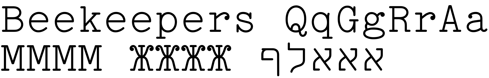
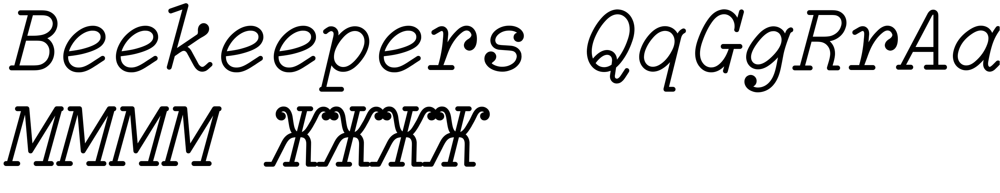
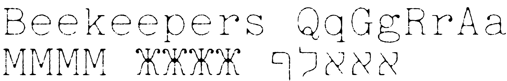
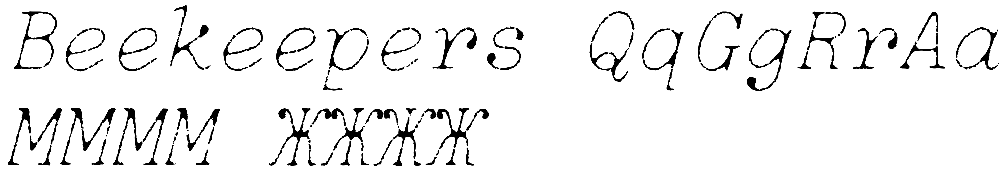
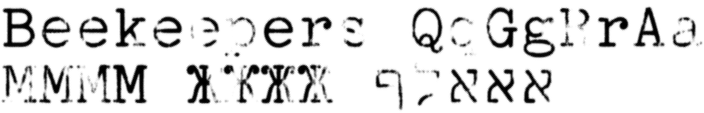
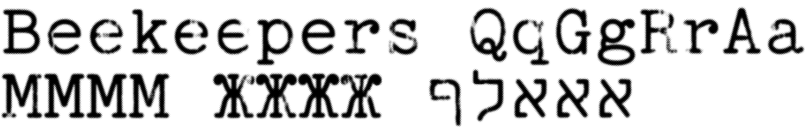

DOWNLOAD.
Download all fonts & documentation, or:
̌DOWNLOAD INDIVǏDUAL STYLES.
In general, the TTF is most useful. However, if you will be using my fonts on your website, use the WOFF2 to save on your bandwidth bill. :-)
All of the fonts on this page are licensed under the SIL Open Font License, version 1.1.
These documentation pages are licensed under the Creative Commons Attribution 3.0 License.
Base Style
Regular

TT2020Base-Regular.ttf
164K
TT2020Base-Regular.woff2
64K
Italic

TT2020Base-Italic.ttf
72K
TT2020Base-Italic.woff2
32K
Style B
Regular
TT2020StyleB-Regular.ttf
3.5M
TT2020StyleB-Regular.woff2
1.9M
Italic
TT2020StyleB-Italic.ttf
4.2M
TT2020StyleB-Italic.woff2
1.9M
Style D
Regular

TT2020StyleD-Regular.ttf
2.9M
TT2020StyleD-Regular.woff2
844K
Italic

TT2020StyleD-Italic.ttf
3.7M
TT2020StyleD-Italic.woff2
1.4M
Style E
Regular
TT2020StyleE-Regular.ttf
3.3M
TT2020StyleE-Regular.woff2
1.8M
Italic
TT2020StyleE-Italic.ttf
4.1M
TT2020StyleE-Italic.woff2
1.8M
Style F
Regular

TT2020StyleF-Regular.ttf
84M
TT2020StyleF-Regular.woff2
31M
TT2020StyleF-Regular-ASCII.ttf
9.0M
TT2020StyleF-Regular-ASCII.woff2
3.4M
Style G
Regular

TT2020StyleG-Regular.ttf
96M
TT2020StyleG-Regular.woff2
19M
TT2020StyleG-Regular-ASCII.ttf
11M
TT2020StyleG-Regular-ASCII.woff2
2.3M
Content © Fredrick R. Brennan, originally released on 1 January 2020